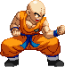
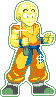

activate Confidence Mode (LV2)
Activating the Confidence Mode changes a few things in Krillin's gameplay.
- Upon activation an empty Confidence Bar (bottom bar), a full buffer bar (on top of that) and a Krillin head are added to the screen.
- His forward walk becomes faster, while his backwards walk becomes slower.
- Ground Forward Dash becomes a more standard traveling dash instead of that tiny spurt.
- Ground Backdash is turned into a fast smear, covering a greater distance in a shorter amount of time.
- Air Forward Dash can be cancelled before the dash animation ends.
- Faster recovery after a Jet Kamehameha (only the first one in each combo).
- Gain access to Wild Sense along with Mirage (detailed below).
- Gain access to an additional Rocketman in the same jump (now able to do any combination of two regular ones and two EX ones).
- Able to throw a second and third Destructo Disc by pressing any Punch button two times after throwing the first.
- Gain access to the Senzu Bean (detailed below).
- Solar Flare x100 costs Lv2 instead of Lv3 and cancels the Confidence bar.
- Performing Fake Special Moves and the Duck 'n Cover fills your Confidence bar.
- Performing the both additional Rocketman and Wild Sense takes a small portion of the buffer bar. The Mirage takes an even larger chunk. When the bar is emptied, the Mode is cancelled out.
- Depending if you're on Lv1, 2 or 3 of the Confidence Bar, Krillin will perform a unique and powerful Finisher at the end of the Solar Flare x100.
- Upon activation an empty Confidence Bar (bottom bar), a full buffer bar (on top of that) and a Krillin head are added to the screen.
- His forward walk becomes faster, while his backwards walk becomes slower.
- Ground Forward Dash becomes a more standard traveling dash instead of that tiny spurt.
- Ground Backdash is turned into a fast smear, covering a greater distance in a shorter amount of time.
- Air Forward Dash can be cancelled before the dash animation ends.
- Faster recovery after a Jet Kamehameha (only the first one in each combo).
- Gain access to Wild Sense along with Mirage (detailed below).
- Gain access to an additional Rocketman in the same jump (now able to do any combination of two regular ones and two EX ones).
- Able to throw a second and third Destructo Disc by pressing any Punch button two times after throwing the first.
- Gain access to the Senzu Bean (detailed below).
- Solar Flare x100 costs Lv2 instead of Lv3 and cancels the Confidence bar.
- Performing Fake Special Moves and the Duck 'n Cover fills your Confidence bar.
- Performing the both additional Rocketman and Wild Sense takes a small portion of the buffer bar. The Mirage takes an even larger chunk. When the bar is emptied, the Mode is cancelled out.
- Depending if you're on Lv1, 2 or 3 of the Confidence Bar, Krillin will perform a unique and powerful Finisher at the end of the Solar Flare x100.

Senzu Bean
The Senzu Bean acts as Krillin's install exit move.
He pops one of those beans in his mouth, refilling his health. This doesn't happens instantly, but slowly over time.
The farther your Confidence bar was filled when activating the Bean, the longer Krillin will continously heal up over time.